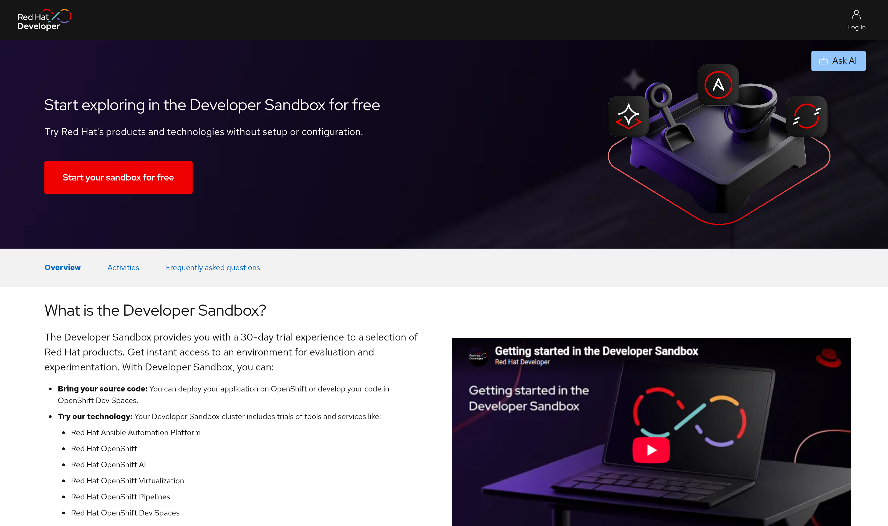

Setup
IDE
You can use any IDE for this tutorial but if you didn’t try it before, we recommend VS Code with the Language Support for Java™ by Red Hat and the Quarkus extensions.
|
If you are using vscode then install vscode Remote Development Extension pack, which allows you to run this entire tutorial within a container that will have all tools configured. |
CLI Tools
The following CLI tools are required for running the exercises in this tutorial.
|
GraalVM is only required if you intend to build a native image for your local operating system. If you want to create a container using a native image, you can use the Quarkus feature for this and don’t need to install GraalVM locally. Since GraalVM for JDK 17 the |
Please have them installed and configured before you get started with any of the tutorial chapters.
| Tool | macOS | Fedora | Windows |
|---|---|---|---|
Podman or Docker |
|
||
Java 21 |
|
|
Eclipse Temurin 21 (Make sure you set the |
Apache Maven 3.9.9+ |
|
|
Windows (Make sure you set the |
GraalVM for JDK 21 (optional) |
|
This revision of the tutorial was validated with Quarkus 3.39.4 on Java 21, Maven 3.9.11,
Podman, and OpenShift 4.21 (Kubernetes 1.34). After the first chapter you can use the generated
|
The chapters that interact with the cluster also use:
Red Hat OpenShift development cluster
You can provision your own development environment at https://developers.redhat.com/developer-sandbox/get-started:
